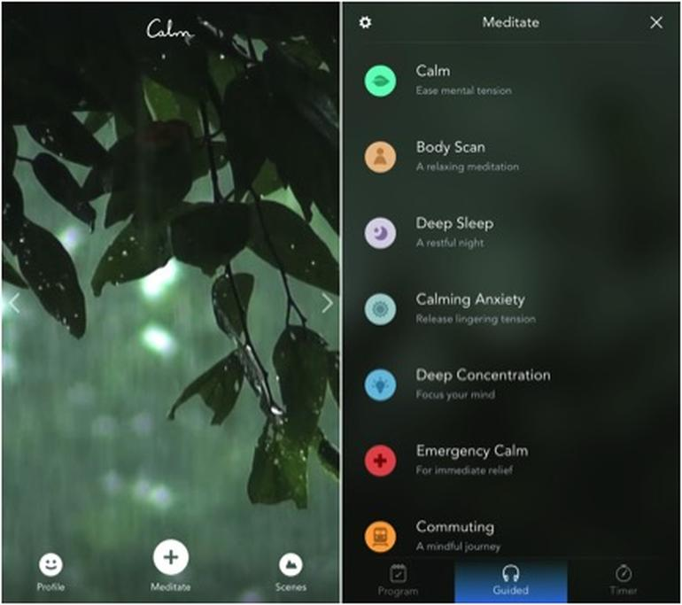

Sprint 2: Mindfulness
“Therefore, happiness may be an unavoidable side effect of cultivating
emotional intelligence. Other side effects may include resilience, optimism,
and kindness. (You may want to call your doctor to determine if
happiness is right for you.)”
Search within yourself by Chade-Meng Tan, Chapter 1: Even an engineer can have emotional intelligence
What learnings did you take from the chapter?
I would like you to meet Jon MacDonald the CEO of Trade Me. Why? Because reading this chapter I saw this man.
The 5 domians that Meng mentions are
1. Strong achievement drive and high achievement standards
2. Ability to influence
3. Conceptual thinking
4. Analytical ability
5. Initiative in taking on challenges
6. Self-confidence
This is Jon (aka Jmac) in list form. I've been vey lucky to have been able to work with this man for the last 6 years and is everything mentioned about what a person with emotional inteligence is. Even beyond Jon, I work with others who I can see the same values in them as well.
Emotional intelligence is setting your own personal code of conduct. Its how you choose to interact with the world.
I studied psychology at uni plus done a number of courses through work on EI (emotional intelligence), Courgous converstaions, Resilence etc I know what EI is and alot of this all comes back to Mindfulness.
A couple of years ago I was having a hard time at work so I decided that i needed to make changes. Customer Service is hard and you need alot of resilence to deal with the pure, unadulterated and very raw emotions you get confronted with via email and on the phone. This can get to you especially when you don't know what the next call or next email is going to be.
One of things I chose to impliment was taking up meditation. What this did was made me more aware of me and what triggers my negative behaviours and just overall being more postive to be around. In the last few months I've pushed that aside to focus on other things, so making time to just be, hasn't been a priority. What I learnt from reading this chapter is I need to make make time again and to get my houses back in order.
By houses I mean my mind, body and wellbeing need a big tidy up, because things need to be in order for me to be the best version of me.
How did you find the two minutes of mindfulness?

Meet Calm, my favourite go to app for guided meditation. I've taken up doing this 15 mins in the morning when I wake up and 15 mins before bed. Its been a week and I forgot on Friday night/Saturday morning when I got home (staff party), but so far feeling good and more settled so to speak.